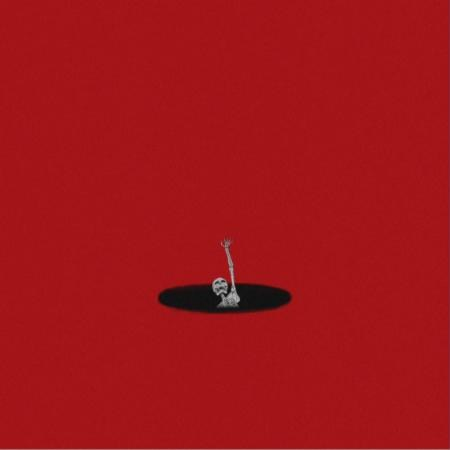

feelin' low (demo)
My newest release. I put it out as a demo so people could hear the song the way it first came together.
Stream & SaveSinger • Songwriter • Producer
Los Angeles, CA · jackjeter.com
Everything I have released so far is on this page, from my newest single back to my first EP. Each link opens a page where you can pick your favorite platform (Spotify, Apple Music, YouTube Music, and more) and stream or save the song.
A 15-second look at the artwork for every release, from feelin' low (demo) back to The Red Place.
| Release | Format | Listen |
|---|---|---|
| feelin' low (demo) | Single | Stream & save |
| ALL GO BAD | Single | Listen now |
| in the past til i pass | Single | Listen now |
| LA Can’t Handle the Rain | Single | Listen now |
| The Red Place | EP, 5 tracks (2022) | All platforms |
My newest release. I put it out as a demo so people could hear the song the way it first came together.
Stream & Save
A single with a stripped-back cover: just me in all white against a plain white wall.
Listen NowA single with a dark, minimal cover: a scratched black background, a small white heart, and my signature.
Listen Now
Named after Los Angeles, the city I live and work in. The cover is a hand-drawn storm cloud over the downtown skyline.
Listen Now
My first EP, from 2022: five electronic, house, and dance tracks.
All Platforms